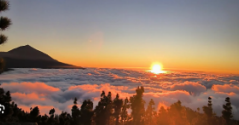

El Parque Nacional del Teide
Ubicado en la isla de Tenerife, es uno de los monumentos naturales mas visitados

Su paisaje volcanico ofrece una biodiversidad unica y senderos de alta montaña
Ubicado en la isla de Tenerife, es uno de los monumentos naturales mas visitados

Su paisaje volcanico ofrece una biodiversidad unica y senderos de alta montaña